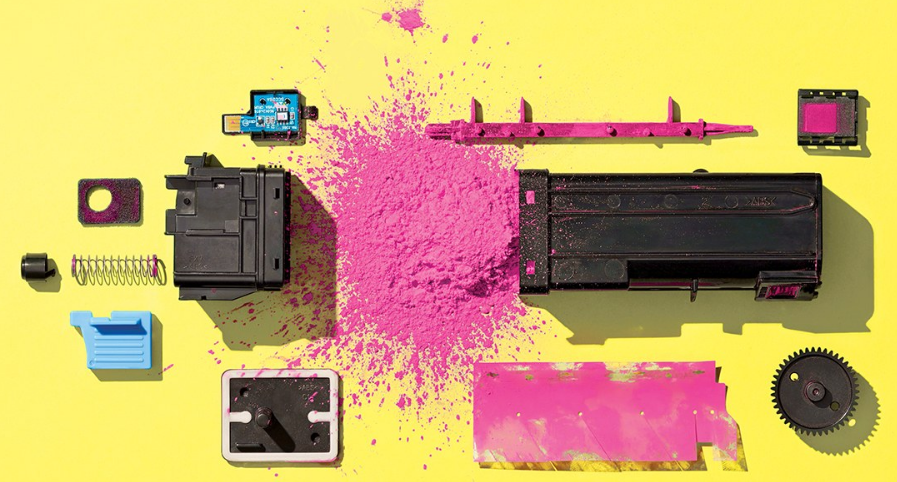
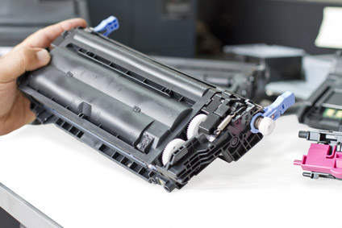
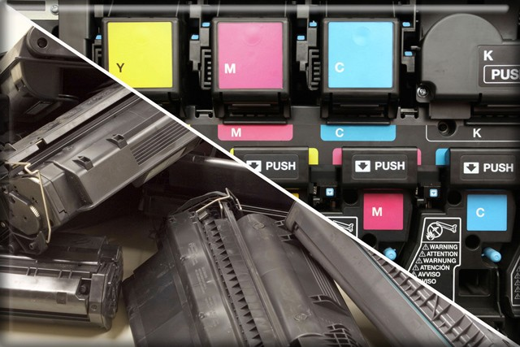

Toner Trong Máy In Là Gì? Khác Nhau Giữa Toner Cartridge Và Ink Cartridge ?
Toner trong máy in là gì? Sự khác nhau giữa Toner Cartridge và Ink Cartridge? Đây là câu hỏi luôn được nhiều khách hàng quan tâm nhất hiện nay. Do các thông báo lỗi trên màn hình máy in hiển thị ngôn ngữ tiếng anh luôn làm bạn bối rối, chúng hoàn toàn xa lạ với những người ít tiếp xúc với máy in.
I. Toner trong máy in là gì?
Toner trong tiếng Anh có nghĩa là mực. Như vậy Toner trong máy in có nghĩa là mực in và Toner Cartridge có nghĩa là hộp mực.

Nếu bạn tìm kiếm Toner trên google thì sẽ có không có kết quả phù hợp, bởi mỗi ngành lại có khái niệm về Toner khác nhau.
Mực in được chia thành nhiều loại như mực in đen trắng, mực in màu, mực in phun, mực in laser. Mỗi loại có đặc điểm khác nhau và tương thích với từng dòng máy. Không phải tất cả mọi loại máy in đều dùng chung một mã mực. Chính vì vậy, nếu chưa chắc chắn về khả năng tương thích của máy in với mực, Bạn hãy liên hệ với đơn vị cung cấp để được hỗ trợ.
II. Máy in báo replace toner là gì ?
Khi máy in báo replace toner có nghĩa là máy in của bạn cần thay mới hộp mực, chú ý là thay mới cả hộp mực nhé chứ không phải đổ mực, vì khi máy báo tình trạng đó là báo tình trạng con chip đếm mực chứ không phải đếm lượng mực còn lại trong hộp mực.
III. Máy in báo toner low là gì ?
Cũng tương tự như trên, nhưng khi máy báo toner low là lượng mực trong hộp mực còn rất ít.

IV. Máy in báo replace toner có in được nữa không ?
Một só máy in HP có thể vẫn in được nhưng in một thời gian sẽ mờ do lượng mực đã cạn kiệt, với một số máy in brother khi máy báo replace toner thì máy in không hoạt động được nữa.
V. Làm cách nào để máy in không báo replace toner ?
– Thay nguyên hộp mực mới : có thể thay hộp mực hàng hãng ( giá khá cao) hoặc hộp mực thương hiệu đều được ( giá rẻ hơn).
– Thay chip đếm hộp mực : Trên hộp mực có con chip đếm lượng mực còn trong hộp mực, ví dụ hộp mực đầy in được 1000 bản thì hết mực thì con chip này có tuổi thọ là 1000, sau khi in hết 1000 trang nó sẽ báo.
– Đổ mực in đồng bộ : Nếu thay chip mới thì máy in sẽ không báo replace toner nữa nhưng đồng thời chúng ta cũng phải đổ mực vì nếu không đổ mực máy in sẽ hiểu là máy vẫn còn mực
( do máy chỉ nhận được tình trạng chip chứ không nhận được tình trạng mực ) và máy sẽ cho chạy khi đó bản in ra sẽ mờ do không có mực để chạy.
VI. Một số máy in không cần thay chip toner
– Các máy in brother có hệ thống reset toner bằng bánh răng nên khi đổ mực thợ kỹ thuật sẽ đặt lại bánh răng này khi đó máy sẽ tự reset toner.
– Các máy in đời cũ có thiết kế đơn giản không phức tạp như bây giờ nên cũng không có hệ thống cảnh báo toner, chỉ khi in ra bản in mờ là thay hộp mực chứ không có cảnh báo gì.
VII. Một số máy in bắt buộc phải thay chip toner mới cho in.
– Các máy in màu đa số đều bắt buộc phải thay chip toner mới được phép in ấn.
– Các máy in đời mới đều sử dụng chip toner do hãng muốn bán hộp mực và hạn chế việc sửa chữa nên cho ra đời các model máy có công nghệ phức tạp nhằm kiểm soát người dùng sử dụng dịch vụ sửa chữa.
Sự khác nhau giữa Toner Cartridge và Ink Cartridge
Cả Toner Cartridge và Ink Cartridge đều có nghĩa là hộp mực. Tuy nhiên về đặc điểm vật lý và cách thức sử dụng lại có sự khác nhau đáng kể.

+ Toner Cartridge là hộp mực, trong đó mực có dạng bột được sử dụng chủ yếu cho máy in laser.
Máy in laser có nhiều ưu điểm vượt trội hơn so với máy in phun. Một số ưu điểm của máy in laser có thể kể đến như: chất lượng bản in đẹp, sắc nét, chi phí trên mỗi bản in rẻ hơn in phun, tốc độ in nhanh tiết kiệm thời gian cho người sử dụng. Tuy nhiên, nó vẫn có một số nhược điểm nhất định như: giá thành máy đắt hơn, hộp mực sử dụng cho máy cũng đắt hơn.
+ Ink Cartridge cũng là hộp mực nhưng mực có dạng lỏng. Loại mực này được dùng chủ yếu cho máy in phun. Ngày nay máy in phun ít được sử dụng, bởi công nghệ in laser ra đời mang nhiều ưu điểm đáng nể.
Máy in phun tuy có giá thành rẻ hơn máy in laser, hộp mực cũng rẻ hơn. Nhưng xét về lâu dài nó lại gây tốn kém cho người sử dụng bởi hộp mực cho số lượng bản in ít. Nếu so sánh cùng khối lượng mực, hộp mực in laser in được 1500 đến 3000 bản thì hộp mực in phun chỉ in được 300 bản. Đây là con số chênh lệch quá lớn khiến máy in phun không còn được ưa chuộng.
Ngoài ra máy in phun cũng có một số nhược điểm khác như: chất lượng bản in không cao, phụ thuộc nhiều vào chất lượng giấy, chữ in không sắc nét, có thể bị nhòe, tốc độ chậm.
Với những thông tin chúng tôi vừa cung cấp trên, chắc hẳn bạn đã có được những kiến thức bổ ích cho mình trong ngành máy in.
Cần nạp mực hoặc sửa máy in tận nơi? Mực In Trường Phát có mặt trong 30 phút tại TP.HCM — in test trước khi tính tiền, bảo hành 1 tháng.
0908.327.123 · 0819.007.394 (Zalo cả 2 số)